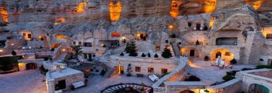

History Of Cappadocia
Human settlement at the Cappadocia region dates back to the Paleolithic era. The lands where the Hittites once lived have been one of the most important centers of Christianity in the later periods. Houses and churches carved into the caves and rocks turned the region into a huge heaven for Christians escaping from the dominance of the Roman Empire.
Cappadocia is a region spreading an area covering the provinces particularly to Nevsehir, Kirsehir, Nigde, Aksaray and Kayseri.
The region of Cappadocia is a place where nature and history integrates. While geographical events created fairy chimneys – the people carved houses and churches inside these chimneys. Later on decorated them with frescoes in this historical process, bringing the traces of civilizations for thousands of years to present. Written history of Cappadocia, where human settlement dates back to the Paleolithic era, begins with the Hittites. Hosting trade colonies throughout history and founding commercial and social bridges between countries, Cappadocia was one of the important junctions of the Silk Road.
The region nowdays has a great importance in terms of Tourism. The main worthseeing places are Ürgüp, Avanos, Göreme, Akvadi, Uçhisar and Ortahisar Castles, El Nazar Church, Aynalı Church (The Church with Mirrors) Güvercinlik Valley, Derinkuyu, Kaymaklı, Özkonak underground cities, Ihlara Valley, Selime Village, Çavuşin, Güllüdere Valley, Paşabağ and Zelve.